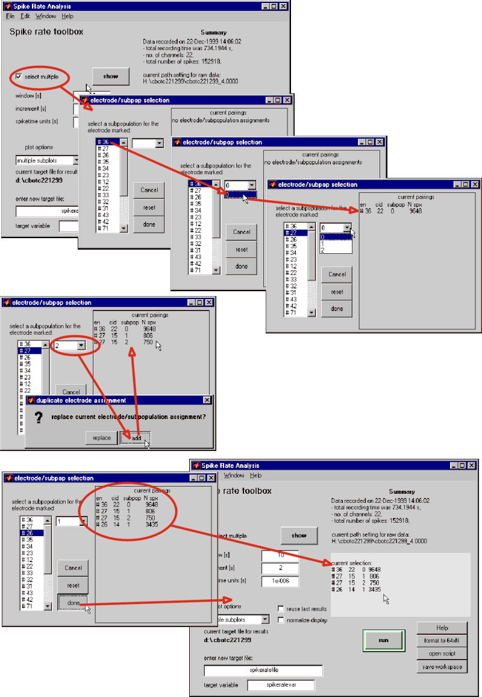

| To select several electrode/subpopulations for one display click on
the corresponding checkbox. The GUI opening as a result allows you
to create a list of electrode/subpopulation combinations. |
| |
| To evaluate several subpopulations from one electrode
press the 'add' button in the query window. |
| |
| Press the 'done' button to close the selection window. The list will
appear in the primary GUIs info field. |
|
 |